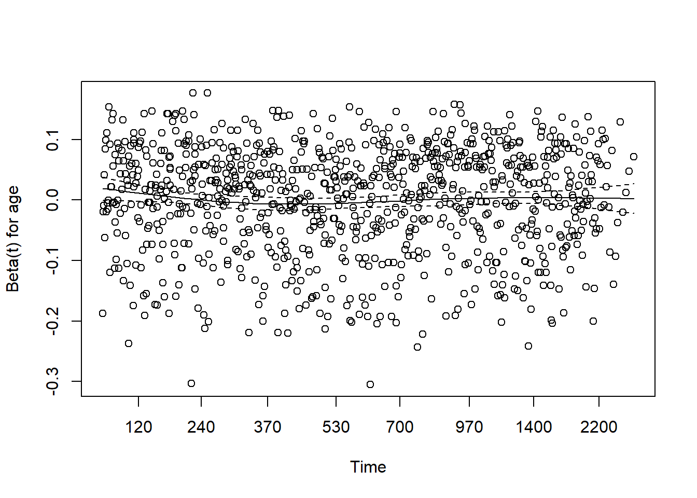
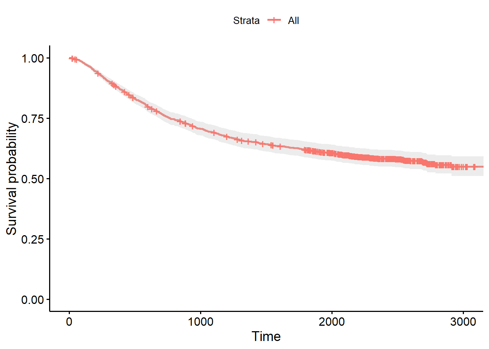

differentiation of tumour (1=well, 2=moderate, 3=poor)
extent:
num
Extent of local spread (1=submucosa, 2=muscle, 3=serosa, 4=contiguous structures)
surg:
num
time from surgery to registration (0=short, 1=long)
node4:
num
more than 4 positive lymph nodes
etype:
num
event type: 1=recurrence,2=death
Assumptions of Cox Proportional Hazards
Proportional Hazards Assumption
Hazard ratios should be constant over time.
Linearity
relationship between covariates and the log hazard is linear.
Independence of Survival Times
Each data point would need to be independent of each other.
No Omitted Covariates
All need to be included or the model will be biased
Model Creation
Surv(time, event) - Creates survival object with time and event
variables after ~ are covariates
cox <-coxph(Surv(time, status) ~ age + sex + node4,data = data)summary(cox)
Call:
coxph(formula = Surv(time, status) ~ age + sex + node4, data = data)
n= 1858, number of events= 920
coef exp(coef) se(coef) z Pr(>|z|)
age 0.001032 1.001033 0.002798 0.369 0.712
sex -0.012918 0.987166 0.066023 -0.196 0.845
node4 0.908290 2.480078 0.068328 13.293 <2e-16 ***
---
Signif. codes: 0 '***' 0.001 '**' 0.01 '*' 0.05 '.' 0.1 ' ' 1
exp(coef) exp(-coef) lower .95 upper .95
age 1.0010 0.9990 0.9956 1.007
sex 0.9872 1.0130 0.8673 1.124
node4 2.4801 0.4032 2.1692 2.835
Concordance= 0.605 (se = 0.01 )
Likelihood ratio test= 162.7 on 3 df, p=<2e-16
Wald test = 178.1 on 3 df, p=<2e-16
Score (logrank) test = 190.3 on 3 df, p=<2e-16
Testing Assumptions
Proportional Hazards Assumption
cox.zph(cox)
chisq df p
age 3.98e-04 1 0.98409
sex 2.99e+00 1 0.08389
node4 1.12e+01 1 0.00083
GLOBAL 1.40e+01 3 0.00294
plot(cox.zph(cox))
Interpretation of output
P value <= .05 indicates the assumption is violated for that covariate.
The visuals display Shoenfeld residuals over time for each covariate. If the residuals are in a straight line, the assumption is satisfied.
If the line changes over time it may indicate the hazard ratio changes over time for the covariate
No clear pattern in the plot indicates no pattern in the residuals. The plot is inconclusive and refer to the p value
If the assumption is broken:
Stratification - analyzing the data separately for different covariates that violate the assumption. Use strata() within coxph() when making the model
Transformation - a transformation, such as log, can be applied to a covariate that breaks the assumption
Linearity Test
Tested by plotting Martingale Residuals against continuous covariates.
martingale <-resid(cox, type ="martingale")#Create a plot for each covariate in the modelpar(mfrow =c(1,3))plot(data$age, martingale, main ="Martingale Residuals: age")abline(h =0, col ="red")plot(data$sex, martingale, main ="Martingale Residuals: sex")abline(h =0, col ="red")plot(data$nodes, martingale, main ="Martingale Residuals: nodes")abline(h =0, col ="red")

Increasing or decreasing slope indicates a violation of the linearity assumption
A horizontal band around 0 indicates the assumption is not violated
Points close to zero indicate the model fits the observations well and vice versa for points far from zero
More points above zero indicates the model is underestimating the hazard for a significant number of observations.
If this assumption is violated:
For the covariate in question, square the term in the model
Use splines for the covariate in question. From the splines library, use ns(covariate, df = _ )
If the variable is continuous, convert it into a categorical variable.
Evaluation
C_index
Concordant if the individual with a higher predicted risk experienced the event before the individual with the lower expected risk.
Discordant if the individual with the higher predicted risk experiences the event after the individual with the lower predicted risk.
Tied if the individuals experienced the event at the same time or did not experience the event in the period.
The c index is between 0 and 1.
1 means the model perfectly discriminates between individuals
0 means the model is completely unable to discriminate between individuals.
.5 means the model performs at random chance.
Interpretation of c index. A c index of ___ means that the model correctly predicts the relative risk of ___ of the comparable pairs.
\[
C-index = \frac{Number of Concordant Pairs}{Pairs}
\]
#Get C index(c_index <-concordance(cox, newdata = data))
── Conflicts ────────────────────────────────────────── tidyverse_conflicts() ──
✖ dplyr::filter() masks stats::filter()
✖ dplyr::lag() masks stats::lag()
ℹ Use the conflicted package (<http://conflicted.r-lib.org/>) to force all conflicts to become errors
Warning in .pvalue(fit, data = data, method = method, pval = pval, pval.coord = pval.coord, : There are no survival curves to be compared.
This is a null model.
Using ggplot to Create Hazard Ratio 95% CI
library(broom)model_summary <-tidy(cox)ggplot(model_summary,aes(x = term, y =exp(estimate), ymin =exp(estimate-1.96*std.error),ymax =exp(estimate+1.96*std.error)))+geom_point()+geom_errorbar(width = .2)+scale_y_continuous(trans ="log")+labs(x ="Covariates",y ="Hazard Ratio (95% CI)",title ="Hazard Ratios from Model")+theme_bw()

Predictions
#Create training and testing setsset.seed(100)split <-sample(1:nrow(data), size =round(.9*nrow(data)))train <- data[split,]test <- data[-split,]
Create Model for Training Data Set
m <-coxph(Surv(time, status) ~strata(age) + sex +strata(obstruct) + perfor + surg,data = train)summary(m)
Call:
coxph(formula = Surv(time, status) ~ strata(age) + sex + strata(obstruct) +
perfor + surg, data = train)
n= 1672, number of events= 823
coef exp(coef) se(coef) z Pr(>|z|)
sex -0.07660 0.92626 0.07626 -1.004 0.315
perfor 0.28173 1.32542 0.22601 1.247 0.213
surg 0.32679 1.38651 0.08283 3.945 7.97e-05 ***
---
Signif. codes: 0 '***' 0.001 '**' 0.01 '*' 0.05 '.' 0.1 ' ' 1
exp(coef) exp(-coef) lower .95 upper .95
sex 0.9263 1.0796 0.7977 1.076
perfor 1.3254 0.7545 0.8511 2.064
surg 1.3865 0.7212 1.1787 1.631
Concordance= 0.546 (se = 0.013 )
Likelihood ratio test= 17.83 on 3 df, p=5e-04
Wald test = 18.43 on 3 df, p=4e-04
Score (logrank) test = 18.57 on 3 df, p=3e-04
Check Assumptions
Proportional Hazards
cox.zph(m)
chisq df p
sex 0.33990 1 0.56
perfor 0.89725 1 0.34
surg 0.00182 1 0.97
GLOBAL 1.29374 3 0.73
plot(cox.zph(m))
m_martingale <-resid(m, type ="martingale")#Create a plot for each covariate in the modelpar(mfrow =c(1,5))plot(train$age, m_martingale, main ="Martingale Residuals: age")abline(h =0, col ="red")plot(train$sex, m_martingale, main ="Martingale Residuals: sex")abline(h =0, col ="red")plot(train$obstruct, m_martingale, main ="Martingale Residuals: nodes")abline(h =0, col ="red")plot(train$perfor, m_martingale, main ="Martingale Residuals: nodes")abline(h =0, col ="red")plot(train$surg, m_martingale, main ="Martingale Residuals: nodes")abline(h =0, col ="red")